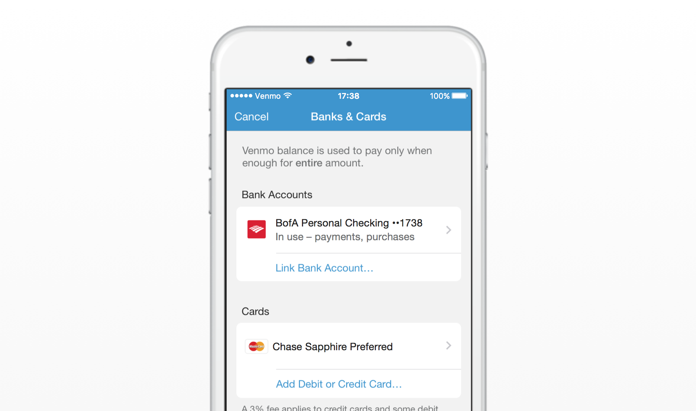
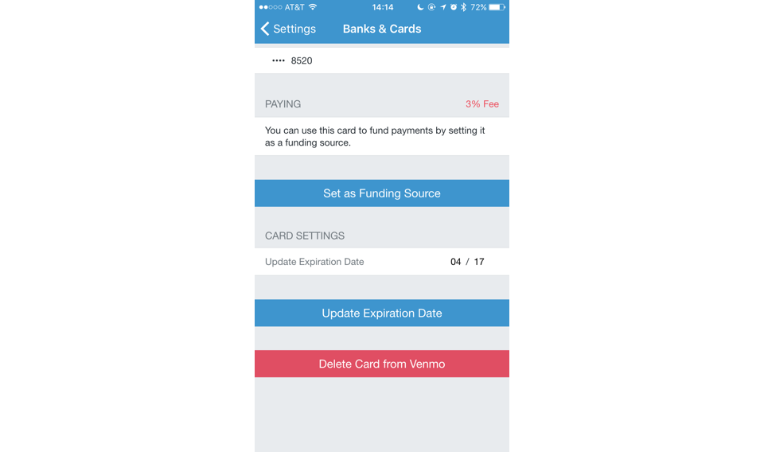
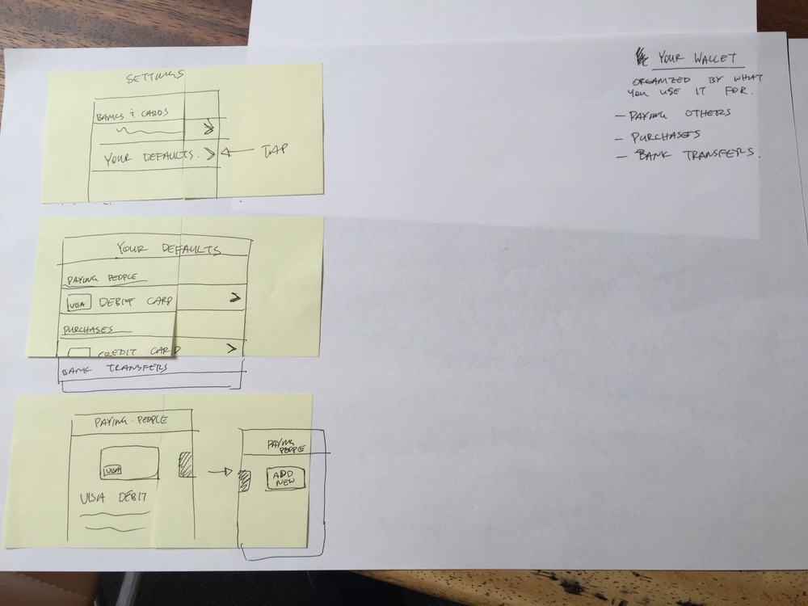
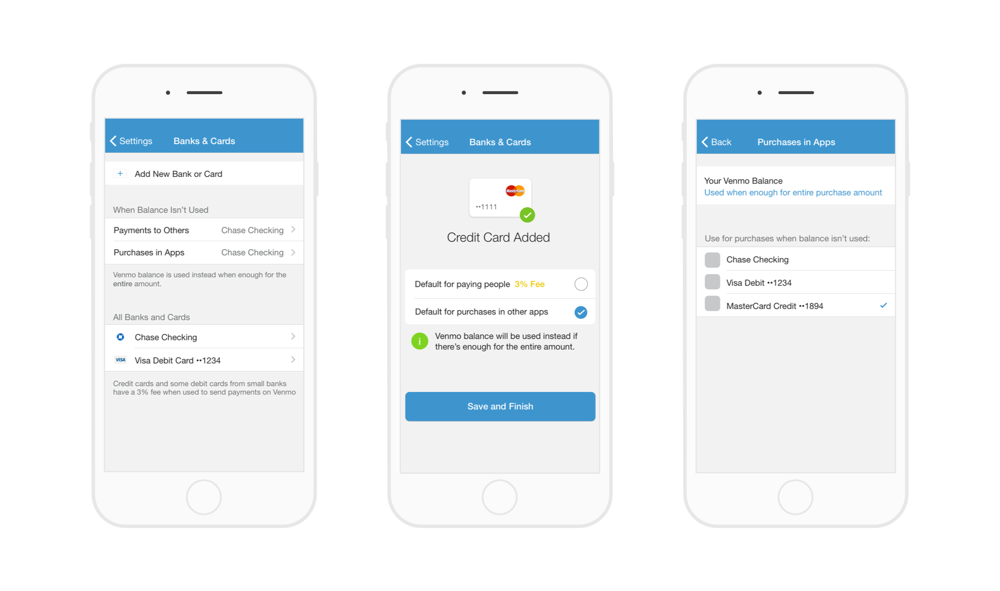
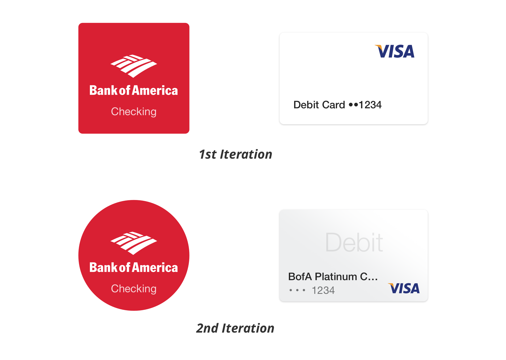
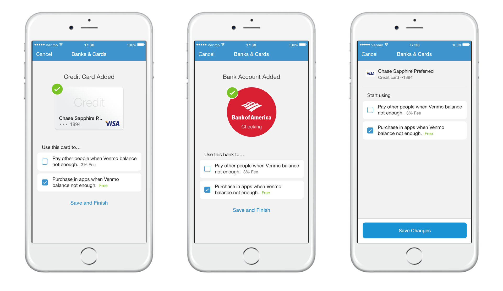

Making Sense of Our Money System
Venmo is responsible for other people's money, so it is crucial that
people understand how money operates within the Venmo ecosystem. Venmo
is comprised of three different payment methods: bank accounts,
debit/credit cards and Venmo balances. Depending on the scenario, there
are different rules that apply to how money movement works. At a high
level, money moves instantly on Venmo and transactions are free, unless
you use a credit card or a debit card from a smaller bank.

The Problem
There are many nuances with Venmo’s payment methods relating to fees,
timing, transferring to banks and type of payments (i.e. paying people
or paying merchants). Our most frequent support cases come from issues
related to our money system. In order to properly scope this project and
not try to tackle a bunch of problems at once, we decided to focus on
one task:
make it easier to send and receive money on Venmo by simplifying the
way one adds and manages banks and cards.
Below are screens that were being used when we started this project.

Process
We used an adaptation of Google Ventures
product design sprint. This included phases for understanding the problem, diverging on
solutions, deciding on solutions, prototyping and user testing. The
project team consisted of an engineer, product manager and product
designer. This was an accelerated project with the majority of the work
completed within two weeks. There was a huge time constraint to ship the
project because it directly affected another significant project that
already had a firm deadline to ship.
Exploration
After we were confident that everyone on the project team fully
understood the problem that we were trying to solve, we created a user
story (created based on our research and knowledge) that would guide the
project. Then we moved on to Phase 2, “Exploration”. Phase 2 of the
sprint began with a lot of white boarding and sketching. We aimed to
generate as many ideas as possible, while keeping in mind the
constraints that we defined during Phase 1.
Below are sketches of ideas that came out during one session of Phase 2.
Our sketches were very rough; it was really about brainstorming and not
getting attached to a single idea.
We took all of the ideas generated during Phase 2 and had mini-critiques
on each of them. During Phase 3, we decided on which ideas to move
forward with (i.e. prototype and user test) and which ones to discard.

Prototyping and User Testing
We are big proponents of making quick prototypes and getting it in front
of people so that we can validate/test our ideas. For this project, I
used a combination of Pixate and Invision to prototype full flows of our
concepts and interactions. Building quick prototypes allowed us to get a
better idea of how confident we were with a given solution.
Below is an example of a prototype that we used during a user testing
session. The user tests helped us identify three things: what we’re
confident works, what we’re somewhat confident works and what we’re
unsure of. Identifying “confidence levels” allowed us to recognize what
needed more work.

After a round of testing, we found that people were having the most
trouble understanding (i) the difference between a bank account and a
card, and (ii) how Venmo balance works. In order to solve (i), we did
more research and developed a ranking of what people tended to look for
when identifying a card visually:
- Color and appearance of card (Diagonal blue gradient)
- Product brand/name (Chase Sapphire Preferred)
- Type of card (Debit)
- Issuing Bank (Chase)
- Network (Visa)
- Last 4 (**1234)
See below for an example of how we iterated on the visuals of this
concept to help people understand the difference between a bank account
and a card. (I understand that the 2nd iteration doesn't completely
follow the ranked list above. This decision was made because of
constraints at that time. This will be improved during a later phase of
this project.)

The 2nd iteration worked a lot better because the card was shaped like a
card, and the bank was not. Also, people immediately saw the word
“Debit” or “Credit” on the card image, and that helped people correctly
associate the image with a card instead of a bank.
Building It
A dozen prototypes later, we finally had something that we felt
confident about. At this point, it was time to polish UI elements and
layouts. Also, because of the time constraint, we had to make some
tradeoffs in order to hit the deadline. This meant making hard decisions
to define what was required for the MVP.
Below is what shipped as the MVP.

Lessons Learned
A byproduct of a project such as this is the broad impact on each user’s core experience with
Venmo. We’re able to take what worked well, and what didn’t work so well, and apply it to
future projects. We’ve also uncovered a lot of useful insights about people’s behaviors that we
weren’t aware of previously. Here are a couple things that stood out to me during this project:
When trying to explain a very complex system, it is worthwhile to think about simplifying the
system, if at all possible and backed up with reason, rather than trying to explain all the
nuances of such a system. Removing pieces of a system might rock the boat initially, but in the
end, simplifying the model might cost less time and effort.
- When trying to explain a very complex system, it is worthwhile to think about simplifying the
system, if at all possible and backed up with reason, rather than trying to explain all the
nuances of such a system. Removing pieces of a system might rock the boat initially, but in the
end, simplifying the model might cost less time and effort.
- People like to focus on the task at hand. Anything not related to the task is secondary and tends
to be ignored. If my task is to “add a credit card to Venmo to use for future payments”, I’m
going to have tunnel vision until that task is completed. For example, if I see copy trying to
explain a concept to me while I’m trying to complete a task, I’ll skim over it because it’s
secondary to the task at hand.
-
Security (perception and actual) always matters, no matter what the task is.